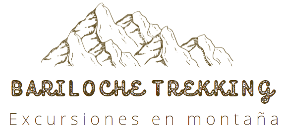

¿Por qué debo reservar de Bariloche trekking?
Al reservar un tour de Barilochetrekking tendrá transporte y lo más importante los servicios
de un guía turístico local que habla español está incluido. Al reservar un excurion privada desde Excurisiones Efeso,
también ahorrará tiempo y dinero. Hemos hecho todo lo que piensa por le. Pasará menos tiempo a la investigación y más tiempo
divirtiéndose. Tienes la oportunidad de elegir entre las rutas mejores y más populares en un puerto de escala basada en el interés y
escoltado por expertos locales que están familiarizados con el puerto, historia y la cultura.
¿Qué incluye la excursión?
La excursión incluyen transporte de acuerdo con el itinerario y guía privada que habla español.
Mientras que su guía está haciendo comentarios sobre los lugares y la cultura de la zona. Su conductor permanecerá al lado del vehículo.
¿Qué tipo de transporte se utiliza para los tours?
El tipo de transporte varían considerablemente, dependiente el número de personas en su grupo. Trabajamos con nuevas marcas Volkswagen y Mercedes Vehiculos. Todos nuestros vehículos son para no fumadores y aire acondicionado.
.
¿Cómo puedo pagar mi viaje, ¿cuál es el procedimiento?
El pago puede hacerse en efectivo al final de la excursion,no hay pago anticipado requerido. Si desea pagar con tarjeta de crédito debe acercarse a la sucursal.
:
El horario de salida indicado es desde oficina, pudiendo en caso de ser retirado desde su alojamiento en el radio céntrico de la Ciudad, demorar hasta 30 minutos o más si este se ubica fuera del radio céntrico.
El horario de retorno de las excursiones es aproximado, sujeto a eventuales demoras por fuerza mayor (tránsito, bloqueos en la montaña, clima, Cortes de ruta, Manifestaciones, etc).
Dado que los causales recién citados son eventos que la empresa no puede evitar, manejar ni son causados por la empresa, se deja en claro que bajo ningún concepto la empresa se responsabilizará ni costeara gastos por perdidas horarias de Boletos en Bus, Ticket de vuelos o Alojamientos.
Para realizar cualquiera de las excursiones es condición excluyente haber reservado y pagado previamente el voucher de los servicios requeridos.
A partir del momento en que se realice la RESERVA el pasajero contará con 24hs previas a la fecha de la excursión para realizar el pago total del servicio, el NO cumplimiento de este requisito declara INVALIDA la reserva y será automáticamente dada de baja en nuestro sistema, salvo se haya pactado con un operador de la empresa una vía y plazo alternativo de pago.
Cancelaciones: están sujetas a penalidades conforme las disposiciones vigentes.
La cancelación/Anulacion del servicio por parte del pasajero deberá ser realizada 24hs antes a la fecha y horario de la excursión reservada, fuera de este plazo no se realizará ningún tipo reembolso y el pasajero solo contará con el derecho de reprogramación de fecha abonando el 50% de la nueva RESERVA.
Las excursiones tienen previsto un desarrollo predeterminado según se indica en cada itinerario.
En caso que condiciones climáticas, de transito, de seguridad o problemas personales o de salud de algún pasajero impidan su realización o alteren el recorrido e itinerario de la misma, se considerará:
a) Si se cumple el 50% o más del itinerario, como excursión cumplida.
b) Si el desarrollo realizado es menor al 50% el pasajero tendrá como único derecho la posibilidad de realizar sin cargo nuevamente la misma excursión u otro servicio abonando la diferencia en caso de tener un costo mayor.
En los casos en que el pasajero debiera abandonar la provincia por retornos reservados según su itinerario de viaje y no pueda tomar nuevamente la excursión se le entregará en concepto de DEVOLUCION una NOTA DE CREDITO con validez de 1 (un) año según la fecha de emisión, para que la utilice como parte de pago por servicios contratados dentro del plazo ya citado. Este documento puede ser transferido en beneficio a otra persona según el consentimiento del titular de la misma.
Bajo ningún concepto se otorgara devolución monetaria alguna.